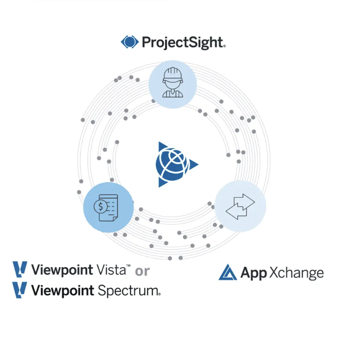
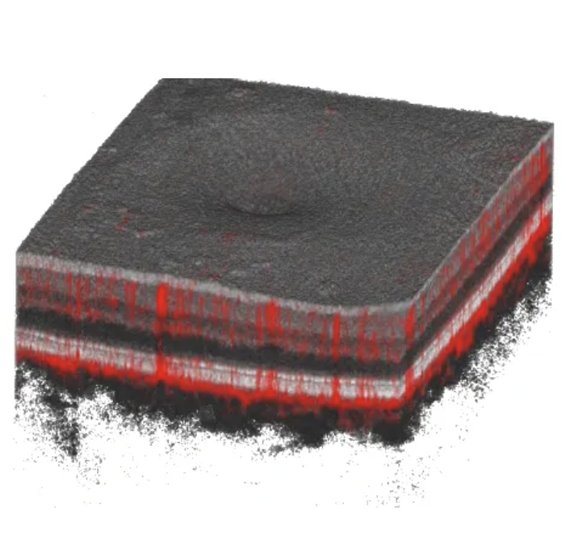
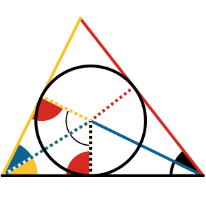
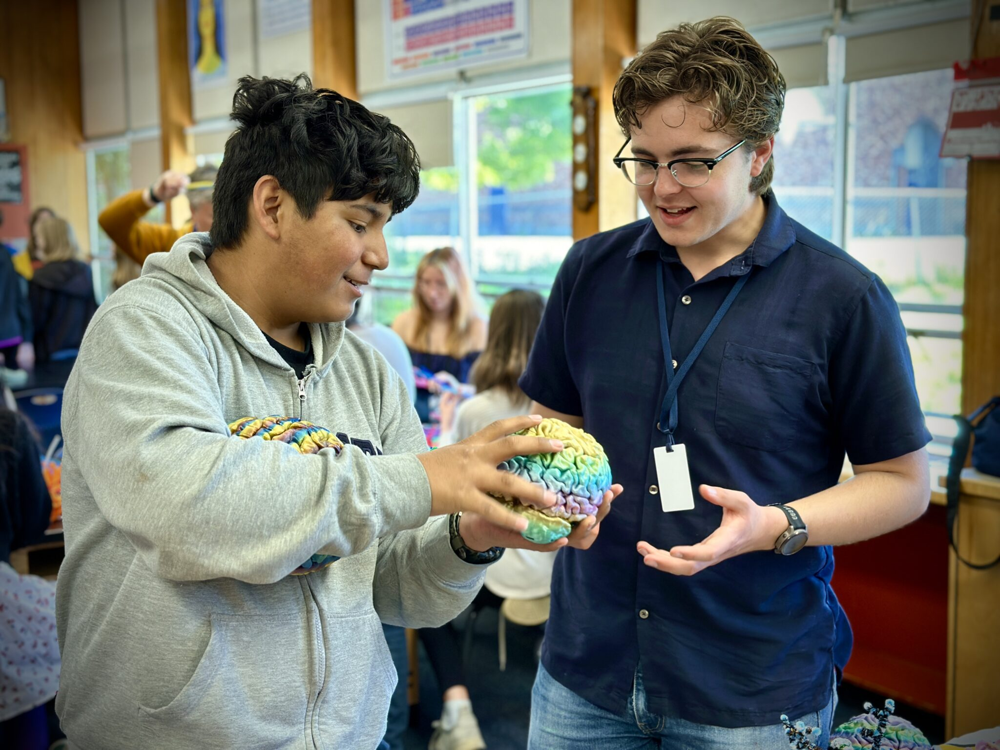
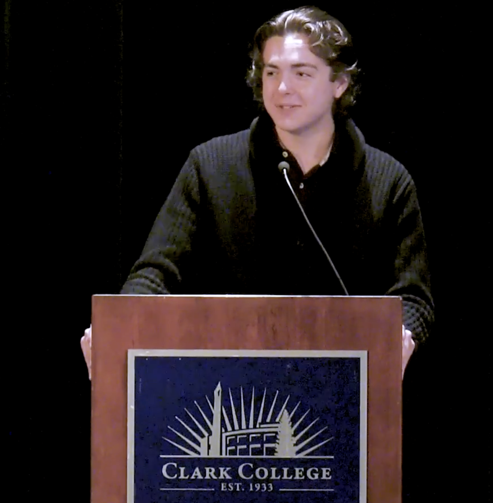

Software Engineer in Test, Intern
Trimble Inc., Quality Assurance, 2026
At Trimble, I built test automation using Typescript (Playwright) and C# helping to catch regressions before deployment and maintain 100% coverage on existing products.
- Developed UI, integration, and API tests alongside developers for Trimble ERPs and to enable a third party integration for taxes with Avalara.
- Refactored a legacy support bot for managing Databricks jobs (PowerShell) into a modern MCP server and n8n agent, deployed via Azure.


Software Engineer, Intern
IFOCUS Imaging, 2024-2025
At IFOCUS, I translated groundbreaking medical research and algorithm demos into readable, object-oriented, and highly efficient code, ready for deployment.
For more on my projects at IFOCUS, see my projects page. Here are some highlights:
-
Layer Segmentation (graph search)
- Implemented retina layer boundary detection with constrained Dijkstra's Algorithm.
- Refactored the algorithm itself to find 60% runtime reduction.
- Parallelized C++ work over 10 cores, reducing total volume runtime from 40 seconds to 6 seconds.
-
Fluid Segmentation (model + GPU pipeline)
- Built object-oriented inference pipeline on a provided model, using Python, ONNXruntime-GPU, and OpenCV.
- Shipped a clean interface, hiding pre- and post- processing behind tested components.
Assistant Center Director
Mathnasium, 2024-2025
At Mathnasium, I led instructors, managed each students' personalized learning plan, and conducted assessments and sales conversations with prospective families. All this stacked on continuing to teach directly — building joy of mathematics for all levels of student.
- With a team of 12 instructors, scaled active students from ~120 to ~150 while maintaining satisfaction (4.8/5 review average).
- Onboarded 8 new instructors, stabilizing routines during seasonal turnover and a leadership transition.


Undergraduate Volunteer
Northwest Noggin, 2024-2025
With NW Noggin, I volunteered alongside active scientists and fellow undergraduate volunteers, bringing kids excitement and love of science.
With real brain specimen, art supplies, and storytelling, we answered questions and engaged creativity for elementary, middle and high school students in underserved communities across Oregon.
Student Body President
Clark College, 2021-2022
As Student Body President during the recovery from the COVID-19 pandemic, I spearheaded the return to in-person campus life following the availability of the vaccine, coordinating between student and faculty leaders to reopen student spaces and resume campus events.
Additionally, I stepped into vacancy when I was needed--taking on responsibility for packing and distribution at the Penguin Pantry food drive in absence of a Civics and Sustainability Director.
